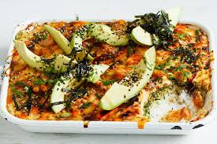

Sushi Bake

Description
A sushi bake is basically a deconstructed sushi roll, with all the elements you love:
tangy sushi rice, seasoned crab filling, and spicy mayo to top it off.
Ingredients
- 1 1/2 cups of sushi rice
- 1/4 cup rice vineger Marukan
- 8 oz imitation crab
- 1/4 cup japanese mayonnaise
- 2 oz cream cheese
- 1 Tbsp sriracha
- 1 Tbsp furikale
- 2 nori sheets
- Toasted sesame seeds
Steps
- Cook rice start off cleaning the rice by running it under cold water for about 1 min.
Place rice in your rice cooker and add 2 cups of water and turn it on
- Once rice is cooked, transfer it to a 13x9 inch rimmed baking sheet
- Pour 1/4 cup rice vinegar over the rice and fold it in, then set that aside and let it cool
- Crab mixture: in a bowl, add 8 oz finely chopped imitation crab, 1/4 cup japanese mayonnaise, 2 oz cream cheese, and 1 tbsp siracha. Mix well till all combined
- Now evenly spred and cpmpress the cooled sushi rice into the baking sheet. Then add 1 tbsp furikale over the rice
- Then spread the spicy crab mixture over the rice and bake in the oven at 380 dgrees Fahrenheit for about 10 min.
- Once the sushi bake is done, drizzle some srirach on top
- To serve sushi bake, cut out squares of nori and place your desired amount of the sushi bake on top